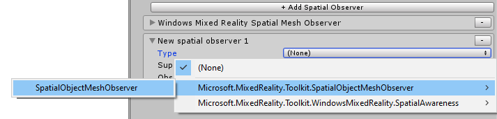

创建空间感知系统 data provider
空间感知系统是一个可扩展的系统，用于向应用程序提供有关真实世界环境的数据。要添加对新硬件平台或新形式的空间感知数据的支持，可能需要自定义data provider。
本文描述了如何为空间感知系统创建自定义 data providers，也称为空间Observers,。这里显示的示例代码来自于SpatialObjectMeshObserver 类实现，这是用于在编辑器中加载3D网格数据。
Note
本例中使用的完整源代码可以在Assets/MRTK/Providers/ObjectMeshObserver文件夹中找到。
名称空间和文件夹结构
data provider可以以下两种方式分发:
- 第三方插件
- 微软混合现实工具包的一部分
为MRTK提交新data providers的审批程序会视乎个别情况而有所不同，并会在提交初步建议时通知有关人士。提案可以通过创建一个新的Feature Request type issue提交。
第三方插件
Namespace
data provider需要有一个命名空间来减少潜在的名称冲突。建议该命名空间包含以下组件。
- 生产插件的公司名称
- 功能区域
例如，Contoso公司创建并提供的空间感知data provider可能是 "Contoso.MixedReality.Toolkit.SpatialAwareness"。
Folder structure
建议将data provider的源代码放在文件夹层次结构中，如下图所示。
其中，ContosoSpatialAwareness文件夹包含data provider的实现，Editor文件夹包含inspector(以及任何其他特定于Unity编辑器的代码)，而Profiles文件夹包含一个或多个预先制作的配置文件可编写脚本的对象。
MRTK提交
Namespace
如果一个空间感知系统 data provider被提交到Mixed Reality Toolkit repository，命名空间必须以Microsoft.Microsoft.MixedReality.Toolkit 开头(例如:Microsoft.MixedReality.Toolkit.SpatialObjectMeshObserver)
代码应该位于MRTK/Providers的文件夹下(例如:MRTK/Providers/ObjectMeshObserver)。
Folder structure
所有代码都应该位于MRTK/Providers(例如:MRTK/Providers/ObjectMeshObserver)下的文件夹中。
定义空间数据对象(spatial data object)
创建空间感知 data provider 的第一步是确定它将提供给应用程序的数据类型(例如:网格或平面)。
所有空间数据对象必须实现IMixedRealitySpatialAwarenessObject
接口。
混合现实工具包基础提供了以下空间对象，可以在新的data provider中使用或扩展。
实现 data provider
指定接口 和/或 基类继承
所有空间感知data providers必须实现 IMixedRealitySpatialAwarenessObserver
接口，它指定空间感知系统所需的最小功能。MRTK基础包括 BaseSpatialObserver
类,它提供此所需功能的默认实现。
public class SpatialObjectMeshObserver :
BaseSpatialObserver,
IMixedRealitySpatialAwarenessMeshObserver,
IMixedRealityCapabilityCheck
{ }
Note
IMixedRealityCapabilityCheck 接口被SpatialObjectMeshObserver 类使用,以表明它提供支持SpatialAwarenessMesh 能力。
应用 MixedRealityDataProvider 属性
创建空间感知data provider的一个关键步骤是应用MixedRealityDataProvider
属性。当在空间感知配置文件以及名称、文件夹路径等中选中时，此步骤允许设置data provider的默认配置文件和平台。
[MixedRealityDataProvider(
typeof(IMixedRealitySpatialAwarenessSystem),
SupportedPlatforms.WindowsEditor | SupportedPlatforms.MacEditor | SupportedPlatforms.LinuxEditor,
"Spatial Object Mesh Observer",
"ObjectMeshObserver/Profiles/DefaultObjectMeshObserverProfile.asset",
"MixedRealityToolkit.Providers")]
public class SpatialObjectMeshObserver :
BaseSpatialObserver,
IMixedRealitySpatialAwarenessMeshObserver,
IMixedRealityCapabilityCheck
{ }
实现 IMixedRealityDataProvider 方法
一旦定义了类，下一步就是提供IMixedRealityDataProvider 接口的实现。
Note
BaseSpatialObserver 类,通过BaseService 类,只提供一个空的实现对于IMixedRealityDataProvider 方法。这些方法的细节通常是特定于data provider的。
data provider方应该实现的方法有:
Destroy()Disable()Enable()Initialize()Reset()Update()
实现 data provider 逻辑
下一步是通过实现特定的data provider接口来添加data provider的逻辑
例如 IMixedRealitySpatialAwarenessMeshObserver。data provider的这一部分通常是特定于平台的。
Observation 更改通知
允许应用程序对设备的理解环境的变化,data provider提出通知事件正如IMixedRealitySpatialAwarenessObservationtHandler<T> 接口所定义的。
OnObservationAdded()OnObservationRemoved()OnObservationUpdated()
下面的代码来自SpatialObjectMeshObserver示例，演示了添加网格数据时的引发和事件。
// mesh observation events 发生时要发送的数据。
// /这个成员变量被初始化为 Initialize()方法的一部分
private MixedRealitySpatialAwarenessEventData<SpatialAwarenessMeshObject> meshEventData = null;
/// <summary>
/// 使用配置的3D模型中包含的网格数据发送观察结果
/// </summary>
private void SendMeshObjects()
{
if (!sendObservations) { return; }
if (spatialMeshObject != null)
{
MeshFilter[] meshFilters = spatialMeshObject.GetComponentsInChildren<MeshFilter>();
for (int i = 0; i < meshFilters.Length; i++)
{
SpatialAwarenessMeshObject meshObject = SpatialAwarenessMeshObject.Create(
meshFilters[i].sharedMesh,
MeshPhysicsLayer,
$"Spatial Object Mesh {currentMeshId}",
currentMeshId,
ObservedObjectParent);
meshObject.GameObject.transform.localPosition = meshFilters[i].transform.position;
meshObject.GameObject.transform.localRotation = meshFilters[i].transform.rotation;
ApplyMeshMaterial(meshObject);
meshes.Add(currentMeshId, meshObject);
// 用添加事件的数据初始化meshEventData变量。
meshEventData.Initialize(this, currentMeshId, meshObject);
// /通过空间感知系统引发事件。
SpatialAwarenessSystem?.HandleEvent(meshEventData, OnMeshAdded);
currentMeshId++;
}
}
sendObservations = false;
}
Note
SpatialObjectMeshObserver类不会引发 OnObservationUpdated事件，因为3D模型只加载一次。WindowsMixedRealitySpatialMeshObserver类中的实现提供了一个为观察网格引发 OnObservationUpdated事件的例子。
添加Unity分析器工具
在混合现实应用程序中，性能是至关重要的。每个组件都会增加一些应用程序必须考虑的开销。为此，重要的是所有空间感知data provider在内部循环中包含Unity 分析器(Profiler)工具和经常使用的代码路径。
建议在检测自定义providers时实现MRTK所使用的模式。
private static readonly ProfilerMarker UpdateObserverPerfMarker = new ProfilerMarker("[MRTK] WindowsMixedRealitySpatialMeshObserver.UpdateObserver");
/// <summary>
/// Requests updates from the surface observer.
/// </summary>
private void UpdateObserver()
{
using (UpdateObserverPerfMarker.Auto())
{
// Code to be measured.
}
}
Note
用于标识分析器标记的名称是任意的。MRTK使用以下模式。
"[product] className.methodName - optional note"
建议自定义data provider遵循类似的模式，以帮助在分析跟踪时简化特定组件和方法的标识。
创建配置文件和 inspector
在混合现实工具包中，data providers是使用配置文件配置的。
定义配置文件
配置文件内容应该反映data provider的可访问属性(例如:更新间隔)。每个接口中定义的所有用户可配置属性都应该包含在配置文件中。
如果新的data provider扩展了现有的provider，则鼓励使用基类。例如,SpatialObjectMeshObserverProfile扩展了MixedRealitySpatialAwarenessMeshObserverProfile让客户提供一个3D模型作为环境数据。
[CreateAssetMenu(
menuName = "Mixed Reality Toolkit/Profiles/Spatial Object Mesh Observer Profile",
fileName = "SpatialObjectMeshObserverProfile",
order = 100)]
public class SpatialObjectMeshObserverProfile : MixedRealitySpatialAwarenessMeshObserverProfile
{
[SerializeField]
[Tooltip("The model containing the desired mesh data.")]
private GameObject spatialMeshObject = null;
/// <summary>
/// The model containing the desired mesh data.
/// </summary>
public GameObject SpatialMeshObject => spatialMeshObject;
}
可以将CreateAssetMenu属性应用于配置文件类，使客户能够使用 Create > Assets > Mixed Reality Toolkit > Profiles 菜单创建配置文件实例。
实现 inspector
配置文件inspector是配置和查看配置文件内容的用户界面。每个配置文件inspector应该扩展BaseMixedRealityToolkitConfigurationProfileInspector类。
CustomEditor属性通知Unity inspector应用到的资源类型。
[CustomEditor(typeof(SpatialObjectMeshObserverProfile))]
public class SpatialObjectMeshObserverProfileInspector : BaseMixedRealityToolkitConfigurationProfileInspector
{ }
创建程序集定义 Create assembly definition(s)
混合现实工具包使用程序集定义(.asmdef)文件来指定组件之间依赖关系以及帮助Unity减少编译时间。
建议为所有data providerd及其编辑器组件创建程序集定义文件。
在前面的示例中使用文件夹结构， ContosoSpatialAwareness data provider将有两个.asmdef文件。
第一个程序集定义用于data provider。对于本例，它将被称为ContosoSpatialAwareness，并将位于本例的ContosoSpatialAwareness文件夹中。这个程序集定义必须指定对Microsoft.MixedReality.Toolkit的依赖项和它所依赖的任何其他程序集。
ContosoInputEditor 程序集定义(assembly definition)将指定配置文件inspector和任何特定于编辑器的代码。此文件必须位于编辑器代码的根文件夹中。在本例中，文件将位于ContosoSpatialAwareness\Editor文件夹中。此程序集定义将包含对ContosoSpatialAwareness程序集的引用，以及:
- Microsoft.MixedReality.Toolkit
- Microsoft.MixedReality.Toolkit.Editor.Inspectors
- Microsoft.MixedReality.Toolkit.Editor.Utilities
注册 data provider
data provider一旦创建，就可以向应用程序中使用的空间感知系统注册。

打包和发布
作为第三方组件发布的data provider具有打包和发布的特定细节，这取决于开发人员的偏好。最常见的解决方案可能是生成一个.unitypackage并通过Unity资源商店进行发布。
如果data provider作为Microsoft混合现实工具包的一部分被提交和接受，Microsoft MRTK团队将把它作为MRTK产品的一部分进行打包和发布。
建议浏览
- 空间感知系统
IMixedRealitySpatialAwarenessObject接口BaseSpatialAwarenessObject类SpatialAwarenessMeshObject类SpatialAwarenessPlanarObject类IMixedRealitySpatialAwarenessObserver接口BaseSpatialObserver类IMixedRealitySpatialAwarenessMeshObserver接口IMixedRealityDataProvider接口IMixedRealityCapabilityCheck接口